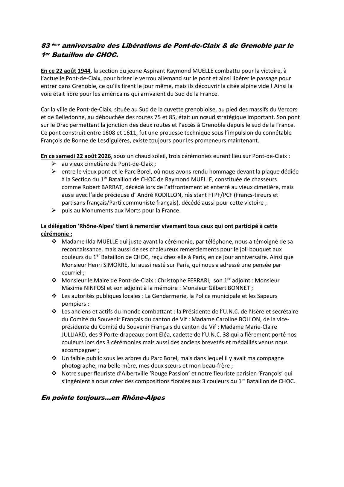

Pont-de-Claix, le verrou du Drac
83e anniversaire des libérations de Pont-de-Claix et de Grenoble par le 1er Bataillon de choc.

Le 22 août 1944
Ce jour-là, la section du jeune aspirant Raymond Muelle combat pour briser le verrou allemand sur le pont de l'actuelle Pont-de-Claix, et libérer ainsi le passage vers Grenoble. Les Allemands décrochent le jour même : les libérateurs découvrent la cité alpine vide. La voie est libre pour les Américains qui remontent du Sud de la France.
Pont-de-Claix, au sud de la cuvette grenobloise, entre Vercors et Belledonne, au débouché des routes 75 et 85, était un nœud stratégique. Son pont sur le Drac commandait la jonction des deux routes et l'accès à Grenoble depuis le sud. Construit entre 1608 et 1611 à l'initiative du connétable François de Bonne de Lesdiguières, cette prouesse technique est toujours là, offerte aujourd'hui aux promeneurs.
Trois cérémonies, un même samedi
Le samedi 22 août 2026, sous un chaud soleil, la délégation Rhône-Alpes a conduit trois cérémonies successives :
- au vieux cimetière de Pont-de-Claix ;
- entre le vieux pont et le Parc Borel, devant la plaque dédiée à la section du 1er Bataillon de choc de Raymond Muelle — une section de chasseurs dont Robert Barrat, tombé lors de l'affrontement et enterré au vieux cimetière, et qui bénéficia de l'aide précieuse d'André Rodillon, résistant FTPF-PCF, mort lui aussi pour cette victoire ;
- puis au monument aux morts, pour la France.
Les remerciements de la délégation
La délégation Rhône-Alpes tient à remercier vivement tous ceux qui ont pris part à cette journée :
- Madame Ilda Muelle, qui a téléphoné juste avant la cérémonie pour témoigner de sa reconnaissance, et remercier chaleureusement pour le bouquet aux couleurs du 1er Bataillon de choc reçu chez elle à Paris le jour même de l'anniversaire ; ainsi que Monsieur Henri Simorre, resté à Paris, qui a adressé une pensée par courriel.
- Monsieur le maire de Pont-de-Claix, Christophe Ferrari, son premier adjoint Maxime Ninfosi et son adjoint à la mémoire Gilbert Bonnet.
- Les autorités publiques locales : la gendarmerie, la police municipale et les sapeurs-pompiers.
- Les anciens et actifs du monde combattant : Caroline Bollon, présidente de l'U.N.C. de l'Isère et secrétaire du Comité du Souvenir français du canton de Vif, Marie-Claire Julliard, vice-présidente de ce même comité, les neuf porte-drapeaux — dont Eléa, cadette de l'U.N.C. 38, qui a fièrement porté nos couleurs lors des trois cérémonies — et les anciens brevetés et médaillés venus accompagner la délégation.
- Le public réuni sous les arbres du Parc Borel, et les fleuristes — « Rouge Passion » à Albertville et François à Paris — qui s'ingénient à composer des bouquets aux trois couleurs du 1er Bataillon de choc.
En pointe toujours… en Rhône-Alpes


Au monument aux morts


Vous y étiez ?
La commission mémoire recherche d'autres photographies de cette journée pour compléter l'album.
Nous écrireRhône-Alpes
Bernard Blanc, délégué régional. Pour le joindre, écrivez au siège de l'amicale.
Voir les délégations